In IESP PM TOOL you can create projects to collaborate with your team members, track issues, document and share information with stakeholders, organize things. A project is a way to structure and organize your work in IESP PM TOOL.
Your projects can be available publicly or internally. IESP PM TOOL does not limit the number of projects, neither in the Community Edition nor in the Enterprise cloud or in Enterprise on-premises edition.
| Topic | Content |
|---|---|
| Select a project | Open a project which you want to work at. |
| Create a new project | Find out how to create a new project in IESP PM TOOL. |
| Create a subproject | Create a subproject of an existing project. |
| Project structure | Find out how to set up a project structure. |
| Project settings | Configure further settings for your projects, such as description, project hierarchy structure, or setting it to public. |
| Change the project hierarchy | You can change the hierarchy by selecting the parent project (“subproject of”). |
| Set a project to public | Make a project accessible for (at least) all users within your instance. |
| Create a project template | Configure a project and set it as template to copy it for future projects. |
| Use a project template | Create a new project based on an existing template project. |
| Copy a project | Copy an existing project. |
| Archive a project | Find out how to archive completed projects. |
| Delete a project | How to delete a project? |
| View all projects | Get an overview of all your projects in the projects overview list. |
| Project overarching reports | How to create project overarching reports across multiple projects? |
Find out in our Getting started guide how to open an existing project in IESP PM TOOL.
Find out in our Getting started guide how to create a new project in IESP PM TOOL.
To create a subproject for an existing project, navigate to the project settings -> Information and click on the green + Subproject button.
Follow the instructions to create a new project.
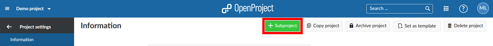
Projects build a structure in IESP PM TOOL. You can have parent projects and sub-projects. A project can represent an organizational unit of a company, e.g. to have issues separated:
Also, projects can be for overarching teams working on one topic:
Or, a project can be to separate products or customers.
IESP PM TOOL, for example, uses the projects to structure the different modules/plugin development:
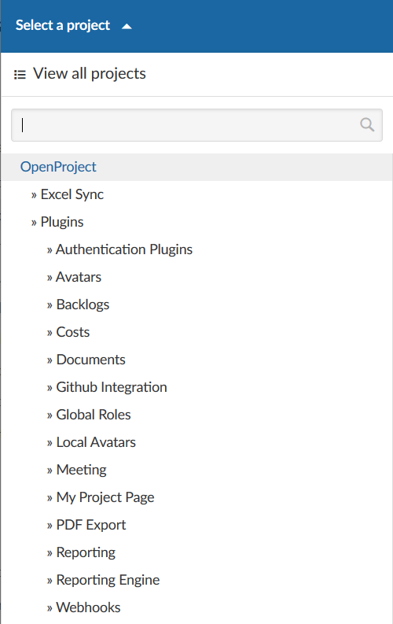
You can specify further advanced settings for your project. Navigate to your project settings by selecting a project, and click -> Project settings -> Information.
You can define whether the project should have a parent by selecting Subproject of. This way, you can change the project hierarchy.
Enter a detailed description for your project.
You see the default project Identifier. The identifier will be shown in the URL.
You can set a project to Public. This means it can be accessed without signing in to IESP PM TOOL.
Click the blue Create button in order to save your new project. Or click the blue Save button to save your changes.
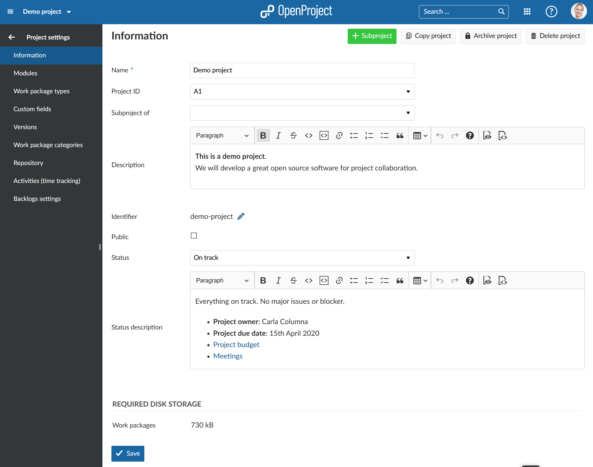
Find out more detailed information about the Project settings.
To change the project’s hierarchy, navigate to the project settings -> Information and change the Subproject of field.
Press the blue Save button to apply your changes.
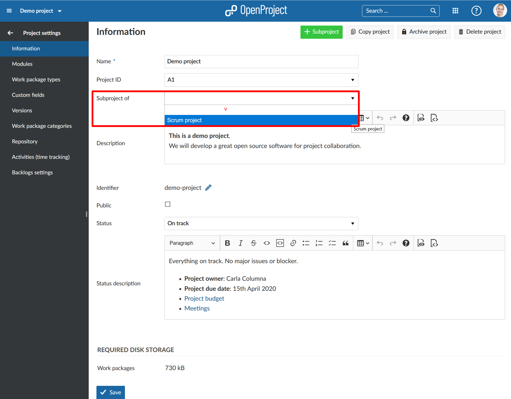
If you want to set a project to public, you can do so by ticking the box next to “Public” in the project settings ->Information.
Setting a project to public will make it accessible to all people within your IESP PM TOOL instance. (Should your instance be accessible without authentication this option will make the project visible to the general public outside your registered users, too)
You can create a project template in IESP PM TOOL by creating a new project and configuring your project to your needs. Name the project so you can identify it as a template, e.g. “Project XY [template]”.
Set up everything that you want to have available for future projects.
Navigate to the project settings and click Set as template in the upper right corner. You can remove a project from the template collection on the same spot.
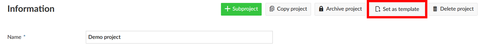
You can create a new project by using an existing template. This causes the properties of the project template to be copied to the new project. Find out in our Getting started guide how to create a new project in IESP PM TOOL. Another way for using a template project would be to copy it.
You can copy an existing project by navigating to the project settings and clicking Copy project in the upper right of the project settings.
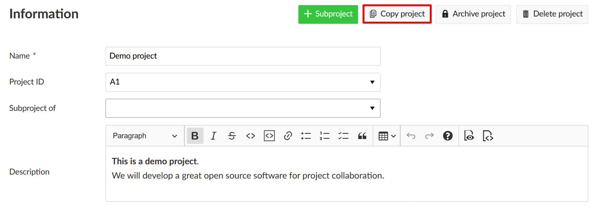
Give the new project a name. Select which modules and settings you want to copy and whether or not you want to notify users via email during copying. You can copy existing boards (apart from the Subproject board) and the Project overview dashboards along with your project, too.
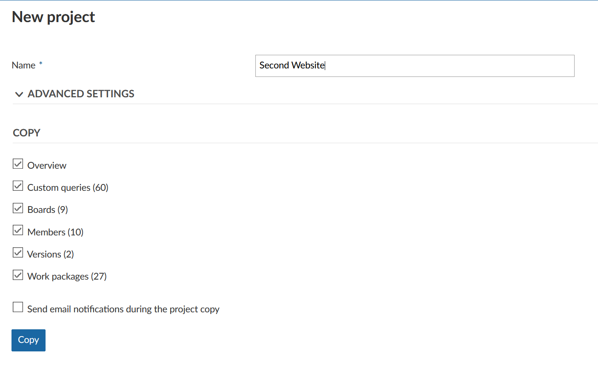
For further configuration open the Advanced settings. Here you can specify (among other things) the project’s URL (identifier), its visibility and status. Furthermore you can set values for custom fields (not shown in the screenshot).
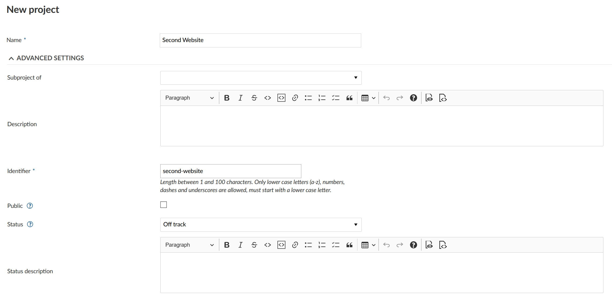
Then click the blue Copy button.
In order to archive a project, navigate to the project settings, and click the Archive project button. Then, the project cannot be selected from the project selection anymore. It is still available in the View all projects dashboard if you expand the filter and select the Archived projects.
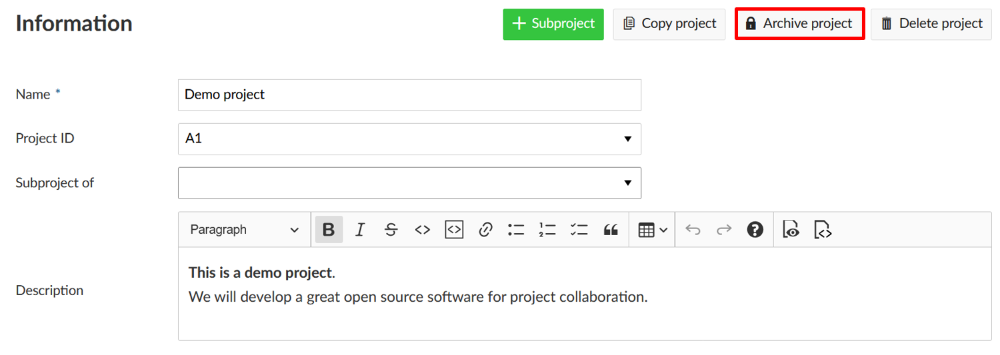
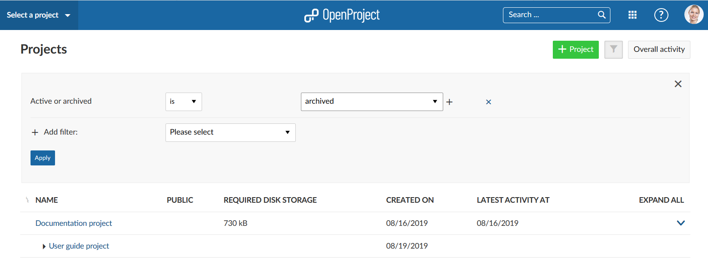
If you want to delete a project, navigate to the project settings. Click the button Delete project on the top right of the page.
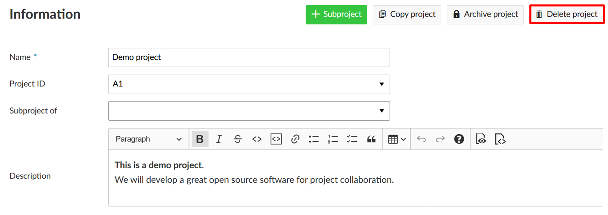
Also, you can delete a project via the projects overview.
To get an overview of all your projects, select the View all projects option from the Select a project menu in the top left header navigation.
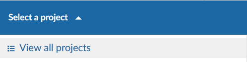
You will then get a list of all your projects in IESP PM TOOL. You can use this projects overview to create a multi project status dashboard if you include your own project custom fields, e.g. custom status options, Accountable, Project duration, and more.
Please note: Project custom fields are a premium feature and will only be displayed here for Enterprise on-premises and Enterprise cloud.
With the arrow on the right you can display the project description.
With the horizontal three dots icon on the right side of the list you can open further features, such as creating a new subproject, project settings, archiving a project, copying and deleting a project. Please note that you have to be a System Administrator in IESP PM TOOL to access these features.
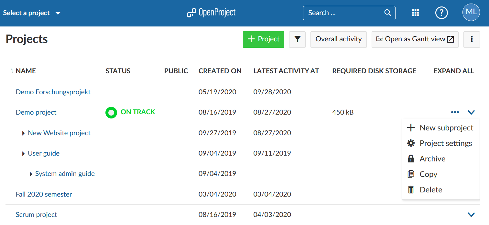
You can choose the columns displayed by default in the System Settings in the Administration. To access it quickly use the vertical three dots icon on the upper right.
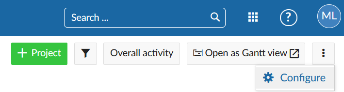
To change the order of the displayed custom fields (columns) follow the instructions here: Displaying a project custom field
To display the work packages of all your projects in a Gantt chart click on the Open as Gantt view icon on the upper right. This is a shortcut to quickly get to the report described in the chapter below. The Gantt chart view can be configured in the System Settings in the Administration.
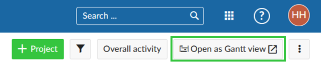
Often you need to see information about more than one project at once and want to create project overarching reports.
Click on the Modules icon with the dots in the header navigation. These are the project overarching modules in IESP PM TOOL.
Here you will find
Select Work packages from the drop down menu Modules in the upper right (nine squares). Now, you will see all work packages in the projects for which you have the required permissions.
In this project overarching list, you can search, filter, group by, sort, highlight and save views the same way as in the work package list in each project.
You can group by projects by clicking in the header of the work package list next to PROJECT and select Group by. Collapsing the groups will allow you an overview of the projects’ aggregated milestones as described here.